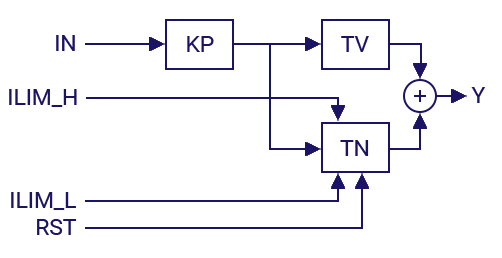

FT_PID
Control Loops (PID)
Advanced
FunctionBlock
v1.0.0
FBD Diagram

pidscheme.png
pid1.png (Icon)
Description
FT_PID is a PID controller of the following formula works:
Y = KP * ( IN + 1/TN * INTEG( IN ) + TV * DERIV( IN ))
The control parameters are given in the form of KP, TN and TV, and if there are parameters KP, KI and KD they can be converted using the following formula:TN = KP/KI and TV = KD/KP
The input values ILIM_H and ILIM_L limit the working area of the internal integrator. With RST, the internal integrator will always set to 0. The output LIM signals that the integrator runs one of the limits or ILIM_L ILIM_H. The PI controller is free running and uses the trapezoidal rule to calculate the integrator for the highest accuracy and optimal speed. The following graph illustrates the internal structure of the controller: The default values of the input parameters are predefned as follows:
The default values of the input parameters are predefned as follows:
- KP = 1
- TN = 1s
- TV = 1s
- ILIM_L =-1E38
- ILIM_H =+1 E38
Inputs (13)
| Name | Type | Init | Description |
|---|---|---|---|
| actual | REAL | Signal actual value (feedback) | |
| set_point | REAL | Controller setpoint | |
| noise | REAL | Noise value for filtering | |
| offset | REAL | Output offset | |
| manual_in | REAL | Manual signal input | |
| manual | BOOL | Manual mode enable | |
| rst | BOOL | FALSE | Controller reset |
| int_band | REAL | 100 | Integrator input working range |
| KP | REAL | 1.0 | Proportional gain |
| TN | REAL | 1.0 | Integral gain |
| TV | REAL | 1.0 | Derivative gain |
| limit_L | REAL | -1000 | Output signal lower limit |
| limit_H | REAL | 1000 | Output signal upper limit |
Outputs (4)
| Name | Type | Description |
|---|---|---|
| y | REAL | Output signal |
| diff | REAL | Actual error value |
| lim | BOOL | In-limit output status |
| overflow | BOOL | Integral overflow status |
Local Variables (4)
| Name | Type | Description |
|---|---|---|
| integ | FT_INT | |
| deriv | FT_DERIV | |
| int_limit_L | REAL | |
| int_limit_H | REAL |
Source Code (ST)
(*
version 1.6 5 jan 2008
programmer hugo
tested by tobias
FT_PID is a pid controller with manual functionality.
The PID controller works according to the fomula Y = KP * ( e + 1/TN * INTEG(e) + TV * DERIV(e)) + offset, while e = set_point - actual.
a rst will reset all internal data, while a switch to manual will cause the controller to follow the function Y = manual_in + offset.
limit_h and Limit_l set the possible output range of Y.
the output flags lim will signal that the output limits are active and overflow will signal that the integrator has reached the max or min limit.
since rev 1.1 the "trapezregel is used for more accuracy.
rev 1.2 added selective integratin which means the integrative component is only active within a small range of the target value
this avoids the integrator to go to limits while an input setpoint change happened and is only causing overshoots.
the int_band is by default 100 which means the int is active all the time and if set to for example to 0.1 the integrator is only active
while the input is between 0.9 and 1.1 of the set_point value.
default values for KP = 1, TN = 1, TV = 1, LIMIT_L = -1000, LIMIT_H = +1000.
*)
IF NOT rst AND NOT manual THEN
(* calculate the process error *)
diff := DEAD_BAND(set_point - actual, noise);
IF ABS(diff) <= int_band AND NOT overflow AND TN > 0.0 THEN
(* integrator is within int_band and needs to be run *)
integ(in := diff, K := 1.0/TN, run := TRUE, rst := FALSE, out_min := int_limit_L, out_max := int_limit_H);
(* check if integrator has reached its limits and set overflow *)
IF integ.out >= int_limit_H OR integ.out <= int_limit_L THEN
overflow := TRUE;
END_IF;
ELSE
(* int_band is exceeded, integrator needs to be cleared *)
integ(rst := TRUE);
END_IF;
(* calculate the derivative part *)
deriv(in := diff, K := TV);
(* add up all parts *)
y := KP * (integ.out + deriv.out + diff);
ELSIF rst THEN
integ(rst := TRUE); (* reset the integrator *)
overflow := FALSE; (* clear the overflow flag *)
y := (limit_H + limit_L) * 0.5 - offset; (* set the output between limit_L and limit_L offset will be added again at the end *)
ELSIF manual THEN
y := manual_in;
integ(rst := TRUE); (* make sure integrator is reset to 0 *)
overflow := FALSE; (* manual operation will cancel overflow because integrator was reset *)
END_IF;
(* add offset to Y *)
y := y + offset;
(* limit the outputs and set the lim flag if necessary *)
IF y > limit_H THEN
y := limit_H;
lim := TRUE;
ELSIF y < limit_L THEN
y := limit_L;
lim := TRUE;
ELSE
lim := FALSE;
END_IF;
(* revision history
hm 1.12.2006 rev 1.1
changed algorithm to trapezregel for higher accuracy.
hm 3.1.2007 rev 1.2
added integ_band to select when the integrator is active.
hm 3.3.2007 rev 1.3
added default values to inputs KP, TN, TV, LIMIT_L und LIMIT_H.
hm 31.oct 2007 rev 1.4
total rewrite of the module to avoid failures when one of the limits is 0
hm 3.11.2007 rev 1.5
added noise input to filter noise
added output diff
set limit output false when output is within limits
overfolw was not set correctly
hm 5. jan 2008 rev 1.6
improved code for better performance
*)